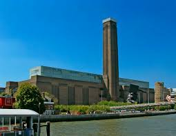
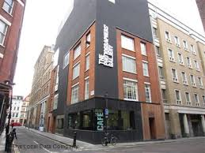
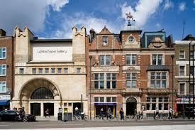
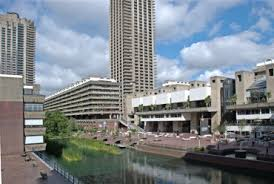
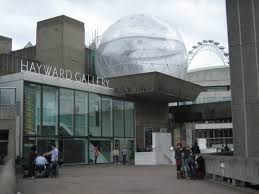

-
The National Gallery
- Soundscapes 8 July 2015 6 September 2015
- Frames in Focus: Sansovino Frames 1 April 2015 13 September 2015
-
National Portrait Gallery
- BP Portrait Award 2015 18 June 2015 20 September 2015
- Audrey Hepburn: Portraits of an Icon 2 July 2015 18 October 2015
-
Tate Britain
- Fighting History 9 June 2015 13 September 2015
- Tate Britain Commission 2015: Christina Mackie 24 March 2015 18 October 2015
- Contemporary Projects: The Weight of Data 18 May 2015 25 October 2015
- Barbara Hepworth: Sculpture for a Modern World 24 June 2015 25 October 2015
- Frank Auerbach 9 October 2015 13 March 2016
- Artist and Empire 25 November 2015 10 April 2016
- David Tremlett Drawing for Free Thinking 19 September 2011 31 December 2016
-
Tate Modern

- The EY Exhibition: Sonia Delaunay 15 April 2015 9 August 2015
- TAgnes Martin 3 June 2015 11 October 2015
- The EY Exhibition: The World Goes Pop 17 September 2015 24 January 2016
- Hyundai Commission 2015: Abraham Cruzvillegas 13 October 2015 20 March 2016
- Alexander Calder: Performing Sculpture 11 November 2015 3 April 2016
-
The British Museum

- The BP exhibition Indigenous Australia enduring civilisation 23 April 2015 2 August 2015
- Drawing in silver and gold Leonardo to Jasper Johns 10 September 2015 6 December 2015
-
The Victoria & Albert Museum
- Alexander McQueen: Savage Beauty 14 March 2015 2 August 2015
- Captain Linnaeus Tripe: Photographer of India and Burma, 1852-1860 24 June 2015 11 October 2015
- What is Luxury? 25 April 2015 27 September 2015
- All of This Belongs to You 3 April 2015 19 July 2015
- Shoes: Pleasure and Pain 13 June 2015 31 January 2016
-
Natural History Museum
- Wildlife Photographer of the Year 24 October 2014 31 August 2015
- Coral Reefs: Secret Cities of the Sea 27 March 2015 13 September 2015
- Sensational Butterflies 2 April 2015 13 September 2015
-
The Design Museum
- Designs of the Year 2015 25 March 2014 31 March 2016
- Life on Foot 13 May 2015 1 November 2015
- Collection Lab 10 September 2014 Summer 2015
-
The Photographers' Gallery

- ROB BALL: DREAMLAND 15 June 2015 2 August 2015
-
Whitechapel Gallery

- A Utopian Stage: Festival of Arts Shiraz-Persepolis 21 April 2015 4 October 2015
- Artists' Film International: Spring 2015 Anatoly Shuravlev, Tran Luong & Vahap Avşar 29 April 2015 14 July 2015
- Max Mara Art Prize for Women: Corin Sworn 20 May 2015 19 July 2015
- TERRAPOLIS 27 May 2015 26 July 2015
- Children's Commission 2015: Rivane Neuenschwander The Name of Fear 23 June 2015 30 August 2015
- James Richards selects from the V-A-C collection 23 June 2015 30 August 2015
-
The Barbican

- The Barbican Exhibition: Building a Landmark 25 May 2015 29 November 2015
- Light Echoes 27 June 2015 6 September 2015
-
Hayward Gallery

- History Is Now: 7 Artists Take On Britain 10 February 2015 26 April 2015
-
The Saatchi Gallery
- PANGAEA II: NEW ART FROM AFRICA AND LATIN AMERICA 11 March 2015 6 September 2015
- DEAD: A CELEBRATION OF MORTALITY 26 June 2015 26 July 2015
-
July
- 12
- 13
- 14
- 15
- 16
- 17
- 18
- 19
- 20
- 21
- 22
- 23
- 24
- 25
- 26
- 27
- 28
- 29
- 30
- 31
-
August
- 1
- 2
- 3
- 4
- 5
- 6
- 7
- 8
- 9
- 10
- 11